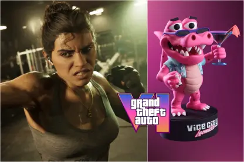
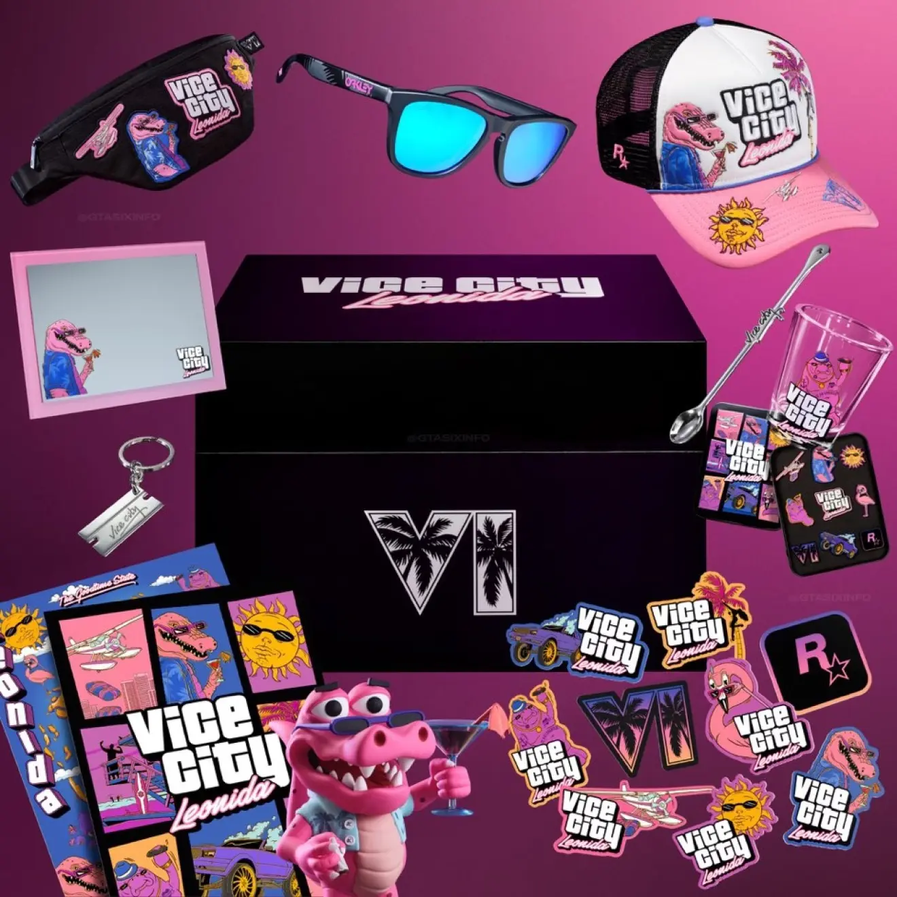

ROCKSTAR DESATA LA POLÉMICA POR UNA EDICIÓN COLECCIONISTA DE GTA VI DE 400 EUROS... ¡SIN EL VIDEOJUEGO DENTRO!
24 de septiembre de 2026

El lanzamiento de Grand Theft Auto VI está cada vez más cerca y Rockstar Games ya empieza a sacar partido de la enorme expectación que rodea al juego. Sin embargo, uno de sus últimos anuncios ha provocado bastante polémica entre los aficionados: una edición coleccionista valorada en unos 400 euros que, sorprendentemente, ¡no incluye el propio videojuego!
Esta edición incluye una figura de 15 centímetros de Macca, el caimán, unas gafas de sol Oakley Frogskins, una gorra New Era, un espejo magnético, una cuchara de cóctel inspirada en Vice City, un llavero, una riñonera, un vaso de chupito, varios pines, pegatinas y un póster con el mapa de Leonida.
Aunque se trata de una colección de artículos bastante completa, el detalle que ha enfadado a muchos jugadores es que tendrán que comprar GTA VI por separado si quieren disfrutar del juego. Según la información publicada, la edición estándar costaría 80 euros y la Ultimate 100 euros.
¿Y QUÉ PASABA CON LAS EDICIONES ANTERIORES?
La polémica aumenta todavía más cuando comparamos esta edición con las de anteriores entregas de la saga.
Por ejemplo, la edición coleccionista de Grand Theft Auto IV rondaba los 100 euros e incluía el videojuego, un libro de arte, la banda sonora, un llavero, una caja metálica y una bolsa.
Por su parte, la edición coleccionista de Grand Theft Auto V también tenía un precio aproximado de 100 euros y ofrecía distintos extras físicos, como un mapa, una bolsa de seguridad, una gorra de New Era y contenido digital exclusivo.
La diferencia de precio y contenido ha provocado que muchos aficionados cuestionen la estrategia comercial de Rockstar.

¿Estamos pagando cada vez más por los productos de colección o simplemente estamos ante una nueva forma de vender merchandising?
Lo que está claro es que conseguir todos los productos relacionados con GTA VI puede salir bastante caro.